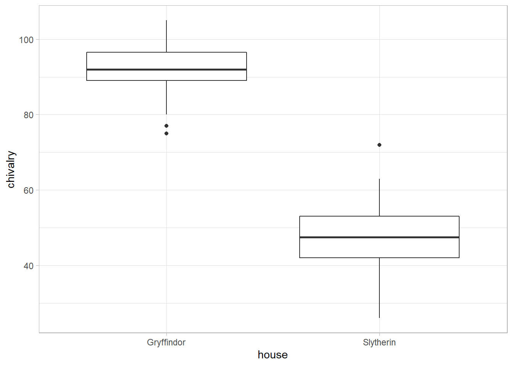

Nullhypothesen-Signifikanztests können uns ausschließlich zu einem probabilistischen Eindruck unserer Daten verhelfen. Wir lernen also etwas vor dem Hintergrund verschiedener Wahrscheinlichkeiten, und ob Effekte in diesem Sinne “statistisch signifikant” sind. Diese Methode wird mittlerweile im Rahmen eines regelrechten Signifikanz-Fetischismus unreflektiert – und ihm wahrsten Sinne des Wortes – ohne Rücksicht auf Verluste angewandt (Cohen, 1994; Easterbrook et al., 1991; Kovic, 2016; Open Science Collaboration, 2015). Jeder möchte “signifikante” Ergebnisse berichten und publizieren, alles andere versackt in den stillen Friedhöfen der Wissenschaft. Warum das ein Problem ist, wird an anderer Stelle erläutert.
Durchforstet man die Literatur, wird schnell klar, das standardmäßig überprüft wird, ob ein Effekt statistisch signifikant ist. Ganz vereinfacht gesagt kann man so testen, “ob ein Effekt zufällig zustandegekommen ist”. Jeder, der aber mehr als einen Schritt geradeaus denken kann, fragt sich doch intuitiv nach der Größe dieses Effekts. Genau dafür sind Effektstärken da; sie vermitteln uns einen Eindruck von der Größe eines Effekts, komplett unabhängig davon, ob dieser statistisch signifikant ist.
Nullhypothesen-Signifikanztests sind nämlich mit einem “Problem” behaftet: Bei großen Gruppengrößen werden selbst kleinste Effekte statistisch signifikant. Aber nur nur weil ein Effekt statistisch signifikant ist, heißt es noch lange nicht, dass er auch eine Relevanz hat. Über die Relevanz eines Effekts kann uns die Effektstärke Hinweise geben.
Auf dieser Seite unterscheiden wir häufig zwischen den “klassischen” und den “robusten” Verfahren. Auch bei Effektstärken gibt es robuste Verfahren, die weniger Anfällig gegenüber Ausreißern und schiefen Verteilungen sind. Deshalb werden wir diese beiden Gruppen auch wieder getrennt behandeln. Wer mehr zu klassischen Effektstärken erfahren möchte, sollte unbedingt Cohen (1988) lesen. Des Weiteren kann man grob zwischen Effektstärken für Gruppenunterschiede und Zusammenhänge unterscheiden; auch dieser Gliederung wird gefolgt.
Alle gleich folgenden Effektstärken für Gruppenunterschiede verfolgen dasselbe Ziel: Unterschiede zwischen Gruppen sollen interpretierbar werden. Es wird also einfach der Mittelwert der einen Gruppe (\(\mu_1\)) minus den der anderen Gruppe gerechnet (\(\mu_2\)). Das ist eigentlich schon eine Effektstärke, weil wir eine Idee von der Größe des Effekts bekommen. Nun ist es leider nicht so, dass in Studien immer dieselben Maße verwendet werden. Studien zur Depression benutzen ganz viele unterschiedliche Fragebögen, um das depressive Syndrom zu erfassen. Einige Autoren nutzen bspw. Becks Depressions-Inventar, andere ein eigenes Instrument. Ein Unterschied von 5 in der einen Studie ist also etwas anderes als ein Unterschied von 20 in der anderen. Um dennoch alle Studien miteinander vergleichen zu können, unabhängig davon, wie sie ihr Outcome erhoben haben, wird dieser Mittelwertunterschied standardisiert (durch einen bestimmten Wert geteilt). Man bringt ihn dadurch auf die Einheit von Standardabweichungen, und da alle Unterschiede in allen Studien so dieselbe Einheit haben, können wir sie miteinander vergleichen.
Im Prinzip unterscheiden sich die Effektstärken dann nur in ihrer Standardisierung. Die wichtigsten werden nun vorgestellt.
Der Urvater der Effektstärken ist Cohens \(d\) (Cohen, 1988). Cohens \(d\) gibt den standardisierten Unterschied zwischen zwei Gruppen an. Das macht es besonders breit anwendbar, da viele Studien miteinander verglichen werden können. Cohen (1988 S. 20) gibt uns die Formel1 \[d = \dfrac{\mu_1-\mu_2}{\sigma}\] mit \(\sigma\) als Standardabweichung der beiden Gruppen. Nach dieser Formel wird angenommen, dass die Standardabweichungen der Gruppen gleich sind (deshalb nur ein \(\sigma\)). Natürlich haben die beiden Gruppen in den seltensten Fällen identische Varianzen, weshalb die Formel für ungleiche Gruppengrößen und -varianzen erweitert wurde (Cohen, 1988 S. 67) \[\dfrac{\mu_1 - \mu_2}{s}\] mit der gepoolten Standardabweichung \[s = \sqrt{\dfrac{\sum{(x_1 - \mu_1)^2} + \sum{(x_2 - \mu_2)^2}}{n_1 + n_2 -2}}\] und \(x_1\), sowie \(x_2\) als individuelle Werte der Probanden in den Gruppen \(1\) und \(2\).
In R können wir \(d\) relativ einfach berechnen – in SPSS hat man keine Chance. Als konkretes Beispiel nutzen wir den Datensatz, den wir bei den unabhängigen \(t\)-Tests genauer untersucht haben (chivalry.sav).
# Daten laden
chivalry_data <- read_spss("data/chivalry.sav") %>% mutate(house = as_factor(house))
# Daten visualisieren
ggplot(chivalry_data, aes(x = house, y = chivalry)) + geom_boxplot()
## # A tibble: 1 x 7
## .y. group1 group2 effsize n1 n2 magnitude
## * <chr> <chr> <chr> <dbl> <int> <int> <ord>
## 1 chivalry Gryffindor Slytherin 5.55 42 38 largeBereits Hedges (1981) konnte zeigen, dass Cohens \(d\) positiv verzerrt ist – es kommen also zu große Werte raus. Hedges (1981, p. S.110) entwickelte deshalb Hedges’ \(g\)2 \[g = \dfrac{\mu_1 - \mu_2}{s_\text{corrected}}\] mit der korrigierten Standardabweichung \[s_\text{corrected} = \sqrt{\dfrac{(n_1 - 1) s_1^2 + (n_2 - 1)s_2^2}{n_1 + n_2 -2}}\] Dabei handelt es sich nur um eine korrigierte Version von Cohens \(d\) und wird auf gleiche Art und Weise interpretiert.
Auch Hedges’ \(g\) kann mit der Funktion cohens_d() berechnet werden, indem man das Argument hedges.correction = TRUE mitgibt.
## # A tibble: 1 x 7
## .y. group1 group2 effsize n1 n2 magnitude
## * <chr> <chr> <chr> <dbl> <int> <int> <ord>
## 1 chivalry Gryffindor Slytherin 5.49 42 38 largeNur um die Sache komplizierter zu machen, berichten Hedges & Olkin (1985), dass auch \(g\) bei kleinen Stichproben positiv verzerrt ist. Deshalb schlug Hedges (1981 S. 111) einen Korrektur-Faktor für \(g\) vor \[g^* = g \cdot J\] mit dem Korrektur-Faktor \[J = \dfrac{\Gamma \left(\frac{\alpha}{2}\right)}{\sqrt{\frac{\alpha}{2}} \cdot \Gamma \left(\frac{\alpha - 1}{2}\right)}\] und \[\alpha = n_1 + n_2 - 2\] Der Korrektur-Faktor wird, weil nicht jeder so leicht die Gamma-Funktion (\(\Gamma\)) berechnen kann, gerne approximativ angegeben als (Borenstein et al., 2009 S. 27) \[ J \approx 1 - \dfrac{3}{4(n_1 + n_2 - 2) - 1} \]
Auch \(g^*\) ist wieder keine komplett neue Effektstärke, sondern nur für eine natürlich auftretende positive Verzerrung korrigiert und lässt sich deshalb genau so interpretieren, wie die beiden vorigen Effektstärken.
Welche sollte man nun also nehmen? Mit Hedges’ \(g^*\) ist man immer auf der richtigen Seite!
Zu den bereits gängigen Effektstärken gibt es noch eine weitere, nämlich Glass’ \(\Delta\). Sie berechnet sich als \[\Delta = \dfrac{\mu_1 - \mu_2}{\sigma_\text{Kontrollgruppe}}\] Die Idee soll sein, dass die Varianz der Kontrollgruppe (oder deren Wurzel daraus, also \(\sigma\)) eher die der Population widerspiegelt, weil man mit ihr “noch nichts gemacht hat”, weil sie z.B. keine Behandlung bekommen hat. Hier habe ich sie eher aus historischen Gründen aufgeführt.
Einer der bekanntesten Effektstärken von Zusammenhängen ist der (stinknormale) Korrelationskoeffizient nach Pearson \(r\) \[r = \dfrac{1}{n-1}\sum_{i = 1}^n{\left(\frac{x_i - \bar{x}}{s_x}\right)\left(\frac{y_i - \bar{y}}{s_y}\right)}\]
Auch für Cohens \(d\) gibt es eine robuste Alternative – dieses Mal jedoch nicht von Wilcox, sondern von Algina et al. (2005). Diese nannten die Effektstärke \(\delta_t\) und kann mit der Funktion akp.effect() berechnet werden. Dabei ist zu beachten, dass diese Effektstärke Varianzhomogenität annimmt. Wenn man unterschiedliche Varianzen vorfindet, sollte man auf \(\xi\) (s.u.) ausweichen.
## [1] 6.717542\(\xi\) (gesprochen “ksi”) wurde von Wilcox & Tian (2011) vorgeschlagen und verfolgt die Grundidee einer explanatory effect size. Sie gibt also grob an, wie viel Varianz durch den Effekt “erklärt” wird. Besonders elegant ist \(\xi\), weil die Varianzhomogenität nicht vorausgesetzt wird und mehr als zwei Gruppen miteinander verglichen werden können (wie bspw. in ANOVA-Designs). Berechnet wird sie durch:
## $effsize
## [1] 0.9832787
##
## $CI
## [1] 0.9469672 0.9943013Algina, J., Keselman, H. J., & Penfield, R. D. (2005). An alternative to Cohen’s standardized mean difference effect size: a robust parameter and confidence interval in the two independent groups case. Psychological methods, 10(3), 317–328. https://doi.org/10.1037/1082-989X.10.3.317
Borenstein, M., Hedges, L. V., Higgins, Julian, P.T., & Rothstein, H. R. (2009). Introduction to Meta-Analysis. Wiley.
Cohen, J. (1988). Statistical Power Analysis for the Behavioral Sciences (2nd ed.). Lawrence Erlbaum Associates.
Cohen, J. (1994). The earth is round (p < .05). American Psychologist, 49(12), 997–1003. https://doi.org/10.1037/0003-066X.49.12.997
Easterbrook, P. J., Gopalan, R., Berlin, J. A., & Matthews, D. R. (1991). Publication bias in clinical research. The Lancet, 337(8746), 867–872. https://doi.org/10.1016/0140-6736(91)90201-Y
Hedges, L. V. (1981). Distribution Theory for Glass’s Estimator of Effect size and Related Estimators. Journal of Educational Statistics, 6(2), 107–128. https://doi.org/10.3102/10769986006002107
Hedges, L. V., & Olkin, I. (1985). Statistical Methods for Meta-Analysis. Academic Press.
Kovic, M. (2016). Die Wissenschaft in der Replikationskrise. Neue Zürcher Zeitung. https://www.nzz.ch/wissenschaft/physik/fallstricke-der-statistik-die-wissenschaft-in-der-replikationskrise-ld.86330
Open Science Collaboration. (2015). Estimating the reproducibility of psychological science. Science, 349(6251), aac4716. https://doi.org/10.1126/science.aac4716
Wilcox, R. R., & Tian, T. S. (2011). Measuring effect size: a robust heteroscedastic approach for two or more groups. Journal of Applied Statistics, 38(7), 1359–1368. https://doi.org/10.1080/02664763.2010.498507
im Sinne einer einheitlichen, einfachen und bekannten Notation, weiche ich an dieser Stelle von Cohens Notation ab und verwende die gängige Notation, die Studierende mehrheitlich lernen. Für die Übersichtlichkeit wird auf Indizes verzichtet.↩︎
Um für ausreichend Verwirrung zu sorgen, nannte Hedges selbst seine Effektstärke auch \(d\); jedoch sollte man sie im Sinne einer einheitlichen Bezeichnung \(g\) bezeichnen. Die gleich folgende Effektstärke \(g^*\) nannte er schlicht \(g\).↩︎